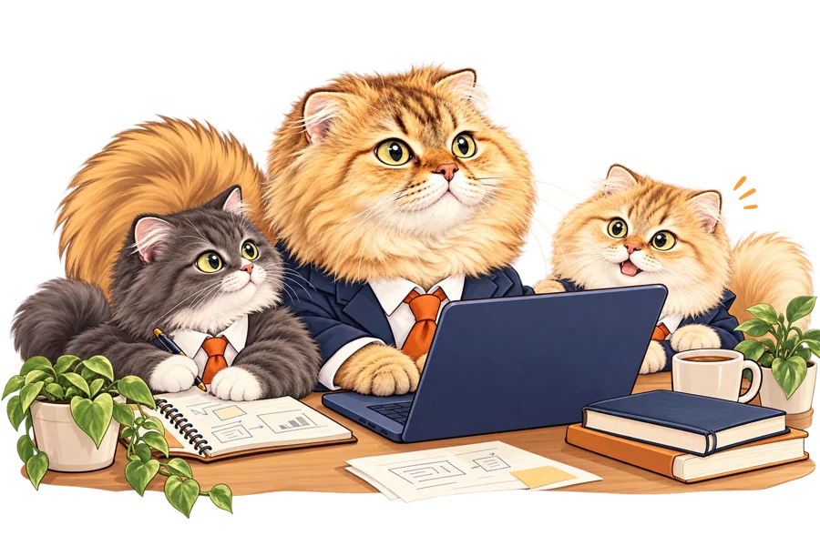
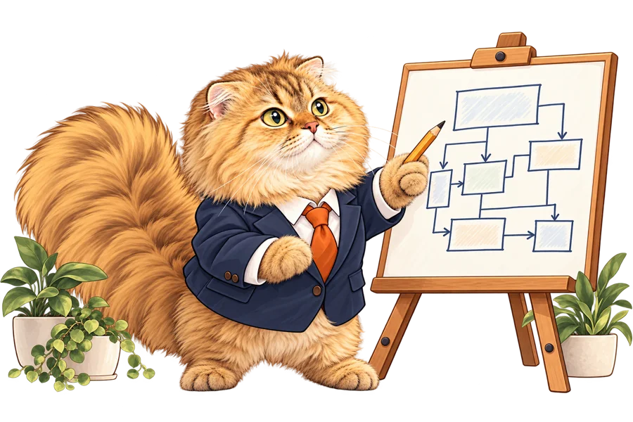
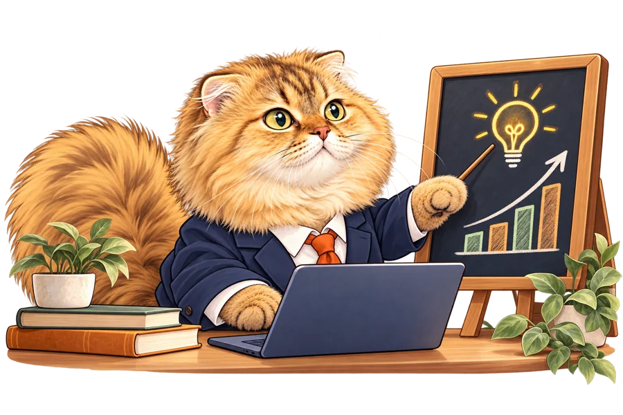
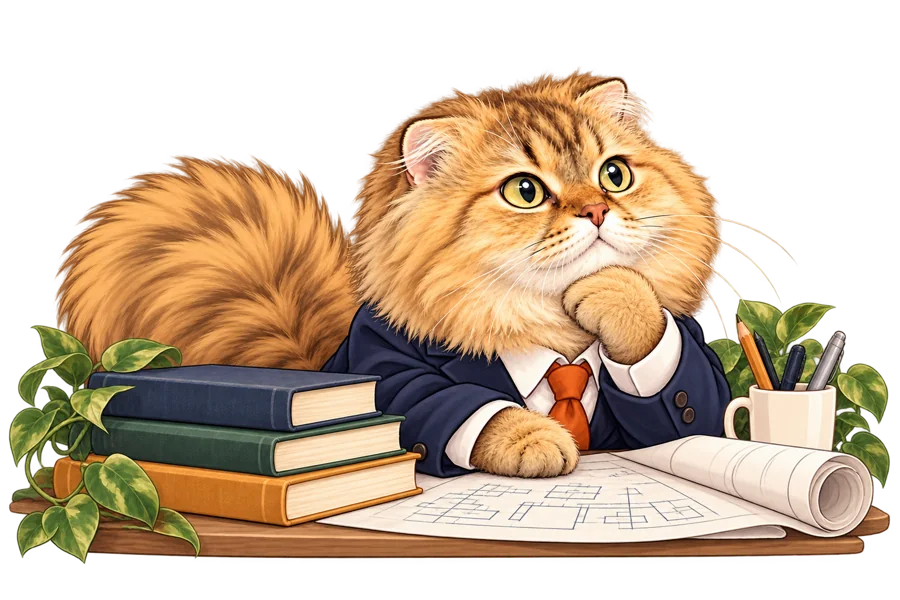
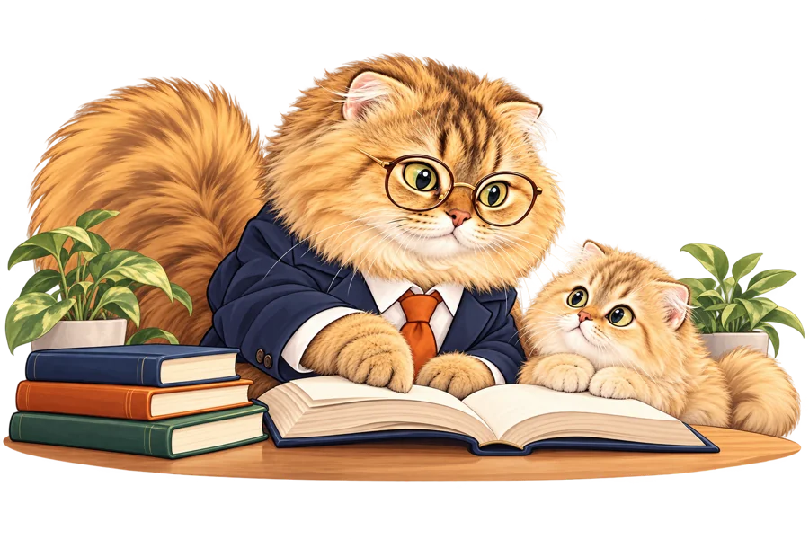
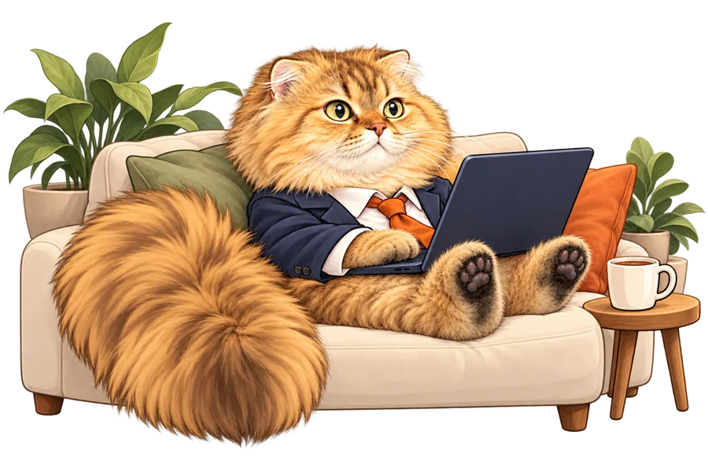
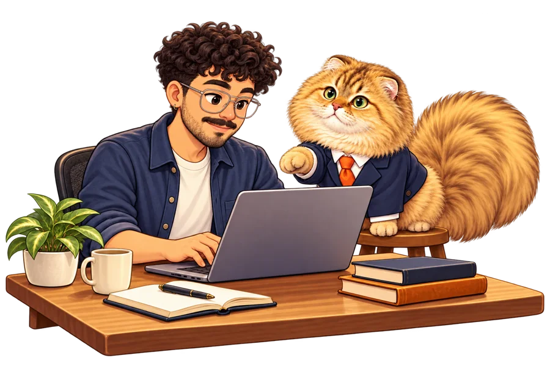

Your team. One more pair of paws.Staff augmentation
An experienced engineer, right alongside your team. Own difficult projects, connect the dots and keep delivery moving.
Your team. One more pair of paws.
 NozomiCONSULTING
NozomiCONSULTING
BELGRADE BASED. WORLDWIDE MINDED.
Staff-level engineering,
with less cat-astrophe.
Staff-level software engineering, architecture and technical leadership. Experienced hands for your next big challenge. A very small CEO for everything else.
Less overhead. More headway. Occasional hairballs.
// a good place to start
HUMAN EXPERIENCE.
FELINE STANDARDS.
WHAT WE DO
Practical engineering support, wherever your team needs it.

Your team. One more pair of paws.An experienced engineer, right alongside your team. Own difficult projects, connect the dots and keep delivery moving.
Your team. One more pair of paws.

Blueprints before pawprints.Make deliberate decisions about reliability, scale and the complexity your product actually needs.
Blueprints before pawprints.

Less herding cats. More moving together.Bring direction to complex work. Align engineering decisions with business goals and help people build with confidence.
Less herding cats. More moving together.

Thinking outside the box.Untangle the problem, explore the tradeoffs and turn a tricky technical challenge into a practical plan.
Thinking outside the box.

A little guidance. A lot of growth.Grow engineering judgment through thoughtful reviews, shared problem-solving and support tailored to your team.
A little guidance. A lot of growth.

Staff-level brains. Flexible hours.Get senior engineering support where it matters most: hands-on delivery, cross-team decisions and long-term direction.
Staff-level brains. Flexible hours.
MEET THE HUMAN
I’m the engineer behind Nozomi Consulting. My background spans staff-level software engineering and technical leadership across quantum computing, healthcare and fintech. I’ve worked with teams in LATAM, the USA, Japan and Spain.
I connect the bigger picture to the work that needs to ship, across hands-on development, system design and team leadership.
Based in Belgrade. Working with teams everywhere. Supervised by one very fluffy cat.

The human writes the code.
Nozomi keeps an eye on things.
See the bigger picture.
Turn decisions into progress.
Keep everyone connected.
Good work starts with people.
Chris
Staff Software Engineer
& Technical Leader
HOW WE WORK
A clear process. A shared goal. A little feline supervision.
Listen to your team, your context and the actual problem. Good questions come first.
Explore the tradeoffs and agree on a focused path forward. Match the support to the work.
Work alongside your team. Make progress visible and share decisions along the way.

Leave better software, clearer decisions and knowledge your team can build on.
04 / MEET THE MANAGEMENT
Meet Nozomi: our namesake, resident supervisor and enthusiastic keyboard tester. Her credentials include a spectacular fluffy tail and an uncompromising commitment to naps.
She believes every complex problem deserves a fresh perspective. Preferably from the top of your laptop.
Performance reviews are snack-based.
YOUR NEXT CHAPTER
Have a project, a tricky technical question or a team that could use an extra pair of experienced hands? Meet the tiny CEO in charge of our availability.
Nozomi is supervising existing projects. New customers will have to wait a little.Belgrade, Serbia
Working everywhere.